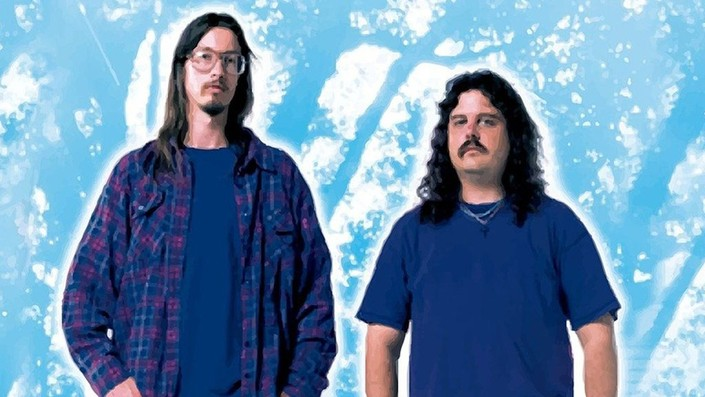

I love this doc for a few reasons: I identify a lot with Mark as someone who has directed short films and
been a one man band on several productions. I love his dynamics with his whole family! His Mom who forgoes her weekly shopping errands to be an extra, his uncle who he convinces to finance his project by getting him drunk and showing him pictures of potential starlets and his best pal Mike Shank whose always has his back.